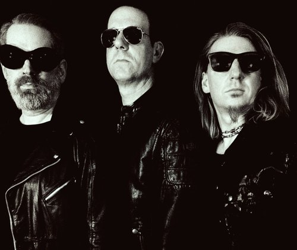

Poisoned Hestia is a german rock band, formed in 1991 under the moniker “13th Floor”, playing some kind of devil music, influenced by late 80’s alternative sub-culture genres like Gothic Rock, Heavy Metal, Post-Punk, Wave and Industrial. The band quickly achieved local underground fame with their intense live presence, playing regular club gigs and regional festivals. Eventually, after a split and a short lived reformation, in 1995 the band went on hiatus, without ever having officially released any of their original material.
The year 2019 marks the reunion of the original core members and the band finally delivered the long-awaited debut album, containing all of their classic songs alongside a few new and previously unheard tracks, in all their powerful and glittering glory. Be prepared. - Words can kill.